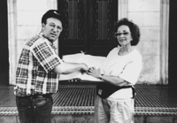

(Note:
this 1995 article provided the motivation for this website.
rs)
Tropical Roots
A lifeline for the Jews
of Cuba results from a brother and sister's search for their father's
past
by Paul Margolis
Now that Cuba is the enemy once again, and the U.S. embargo
has been tightened, it's easy to forget that there are 1,200 to
1,500 Jews living on that unfortunate island. However, a brother
and sister from suburban New Jersey haven't forgotten their responsibilities
to Jews in need. They have formed an organization called The Cuban
Jewish Aid Society to help these isolated, impoverished Jews,
and have traveled to Cuba twice to deliver aid.
Cuba has always had a special meaning for Stanley Kossof and
his sister, Sheila Goldberg. Their father, George Kossof, left
Poland for Cuba in 1923, en route to the U.S. Immigration restrictions
prevented him from entering the U.S. directly, so he went to Cuba
first. He expected to stay only six months, but ended up staying
for 11 years, settling in Cienfuegos, a city 150 miles southeast
of Havana.
For the rest of his life, George Kossof spoke warmly of his time
in Cuba. He never got the chance to return after he immigrated
to the U.S., although he often talked about doing so.
"Daddy loved Cuba," says Sheila. "He had good
years there, made lots of friends, and had good memories."
Sheila and Stanley, both in their 50s, grew up hearing about the
old days in Cuba.

Stanley Kossof and his sister Sheila Goldberg,
holding the members' book open to the page with their father's
1930 signature, in front of the Odd Fellowslodge in Cienfuegos
(CJAS photo) |
Cuba probably would have remained solely an association with
their father; then Stanley saw a photo-essay of mine on the Jews
of Cuba. One photograph was of a Jewish man living in Cienfuegos
who had come from Poland in the1920s. It was the only time Stanley
had heard of the city except from his father, and he contacted
me.
I referred them to a Jewish organization that sponsors trips
to Cuba. In early 1995, Stanley and Sheila traveled to Cuba and
visited the Jewish communities of Havana, Santiago de Cuba, Camaguey
and Cienfuegos.
The Jews they met are the remnants of a community that numbered
over 15,000 before the revolution of 1959. Highly assimilated,
many of them professionals, they lived in relative comfort until
the collapse of the Soviet Union threw the Cuban economy into
chaos.
Cuba's Jews were largely forgotten by world Jewry, cut off from
the U.S., and until 1991 were discouraged from practicing Judaism
by the Communist government. Despite these obstacles, the Jews
of Cuba have been reviving Jewish life on the island. Synagogues
have been returned to their former congregations, Havana's kosher
butcher distributes meat when it's available, Hebrew and Jewish
culture are being taught again, and non-Jewish spouses are converting.
While the Jews of Cuba are undergoing a spiritual revival, they
are in desperate need of the basic necessities of life. Food and
medical supplies are strictly rationed, often unobtainable. Clothing,
books, school supplies and personal hygiene items are almost nonexistent.
A trickle of assistance from overseas Jewish organizations gets
to the 1,000 or so Jews of Havana. However, very little of it
goes to the outlying Jewish communities of Santiago de Cuba, Camaguey
and Cienfuegos, where an estimated 300-500 Jews live.
Arriving in Cienfuegos, the city where their father had lived,
Stanley and Sheila felt as if they had "come home."
They found their father's name in the 1930 membership book of
the social club where he had belonged. They also found Jews living
in poverty only 150 miles from Florida.
"It's hard to imagine Jewish people living so close to the
U.S.who are in such desperate need," says Stanley. "I
couldn't believe it when I heard that they didn't even have the
basic necessities like soap and toothpaste, but it's absolutely
true."
In the cities of Camaguey and Santiago de Cuba, they heard the
same things: conditions were very bad. Fellow Jews begged them
for soap, shampoo, underwear and food for their children.
"We made a vow that we would never let these people down,
never let them be forgotten again," says Sheila. That was
the beginning of The Cuban Jewish Aid Society.
When Stanley and Sheila returned to the U.S., they called their
rabbi and told him their plans. With the aid of their families,
members of the congregation and the rabbi, they formed a humanitarian
and religious group.
"Going to Cuba changed our lives," says Stanley. "Now
we have a cause, a mission to help these people."
This past January, Sheila and Stanley returned to Cuba with a
20-person Cuban Jewish Aid Society group, and a full ton of supplies.
They also brought tefillin, siddurim and other religious items
for the newly-reopened synagogues.
"Daddy was always doing acts of tzedakah, of kindness,"
explains Sheila. "He would understand why we're helping the
Jews in a country where they were so good to him when he came
from Poland."
The Cuban Jewish Aid Society is a non-profit organization that
is registered with the IRS and tax-exempt. They are authorized
by the U.S. Government to travel to Cuba to deliver aid to the
Jewish communities.
For additional information, contact:
The Cuban Jewish Aid Society
c/o Stanley Kossof
P.O. Box 4145
Highland Park, NJ 08904
Fax: (908) 846-6884
The Jewish Communication
Network